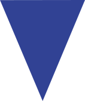
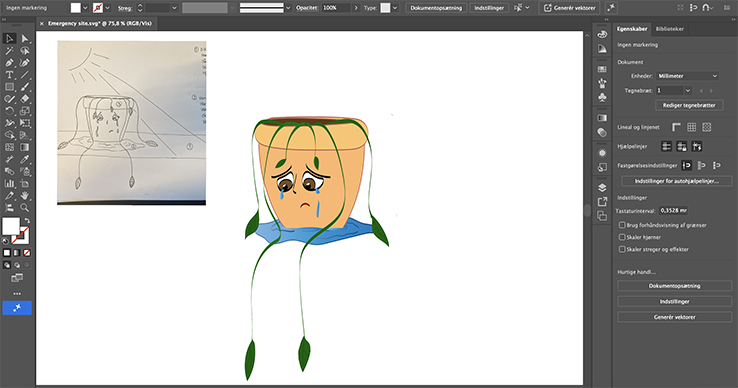
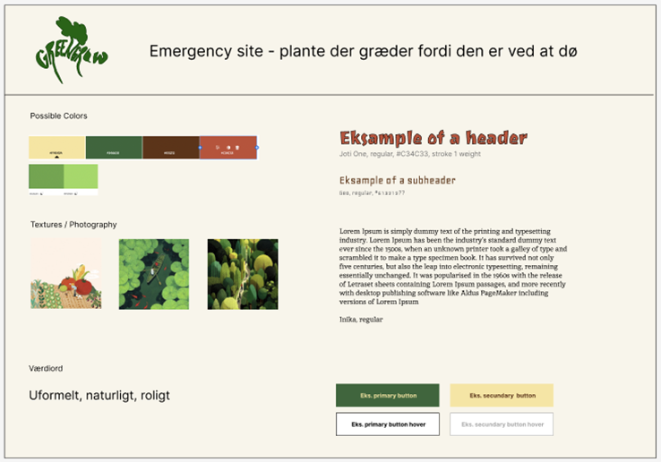
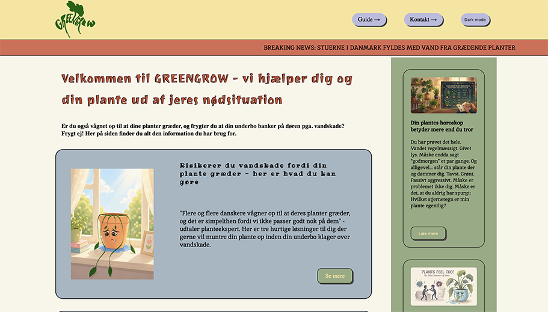

tema 4
grundlæggende brugergrænsefladeudvikling
I dette tema vil du komme til at arbejde med udvikling af brugergrænsefladen på et site, som du får udleveret. Brugergrænsefladen skal udvikles med vigtige værktøjer som Adobe Illustrator, CSS og JavaScript. Vi introducerer Adobe Illustrator og arbejder med vektorgrafik i SVG-formatet. Vi introducerer også programmeringssproget JavaScript, som bruges til at håndtere funktionalitet på sitet. Derudover får du flere avancerede færdigheder i CSS.

proces
i tema 4 skulle jeg igen lave en hjemmeside, men i dette tema startede jeg med at skulle ideudvikle til den svg illustration der skulle være på en af undersiderne. jeg ideudviklede på papir og undersøgte mit stiludgangspunkt og hvad der definerede den stil. derefter lavede vi en peer to peer præsentation i undervisningen. jeg rentegnede min infografik i illustrator og eksporterede den som en svg.
herefter blev jeg introduceret til javascript for første gang, og lavede øvelser med at definere funktioner og lave eventlisteners. jeg blev også introduceret til css custom properties, og fik udleveret hjemmesiden, som denne gang allerede indeholdte noget kode - blandt andet variabler, som jeg selv skulle ændre i. jeg implementerede min svg på undersiden beregnet til den, og arbejdede i undervisningen med hvordan man, vha, javascript, kan lave hotspotsene på sin svg interaktive.

dernæst påbegyndte jeg logo og styletile udvikling, hvorefter jeg i undervisningen blev introduceret til mere javascript, samt css-animationer. jeg arbejdede videre på begge ting igennem udleverede øvelser. hernæst blev jeg introduceret til forms i undervisningen, samt håndtering af forms vha. javascript. dette brugte jeg til at implementere en form på min egen side, samt et summary af den form som teksten fra input felterne blev overført til ved bekræftelse af formen.
jeg var nu nået til at designe min forside , og ideudviklede på denne vha. kryds-metoden. indholdet i artiklerne blev lavet vha. ai, og vi blev igennem undervisningen introduceret til prompts. herefter blev jeg i undervisningen introduceret til darkmode design, og i forbindelse med dette udarbejdede jeg et darkmode styletile. herefter blev vi introduceret til kodning af dark mode og popover, som jeg implementerede på mit site inden jeg kodede det færdigt. afslutningsvis blev vi introduceret til css-scroll-animationer, og lavede nogle øvelser med dette i undervisningen.

løsning
min løsning blev en hjemmeside, der tog udgangspunkt i at stueplanterne i danmark var begyndt at græde fordi de ikke blev passet godt nok, og folk risikerede vandskade. min forside indeholdte to teasers til de to undersider, samt en kolonne der indeholdte tre artikler med popover funktion. jeg stylede siden vha. css, og lavede også en animationen i toppen, samt en progress bar.

læring og reflektioner
jeg lærte meget om javascripts i dette tema, og havde god effekt af at lave de øvelser vi fik udleveret, da det gjorde at jeg fik det bedre ind under huden. det var meget interessant at arbejde med infografik, og jeg fik endnu en gang en bedre forståelse af hvordan visuelle ting ser ud “bag skærmen”. jeg havde også en positiv oplevelse af at arbejde med css-animationer, og fik igen meget ud af øvelserne. generelt var det et interessant tema, hvor jeg lærte meget, men det var også et tema præget af forvirring. ikke fordi jeg ikke forstod de ting vi arbejdede med, men måske i højere grad fordi selve designprocessen ikke var så kronologisk som på det forgående tema.
pil